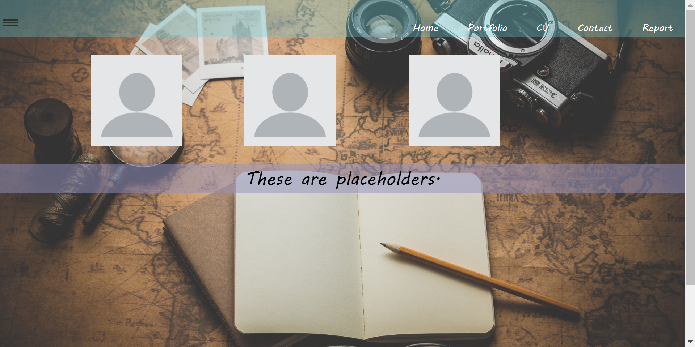
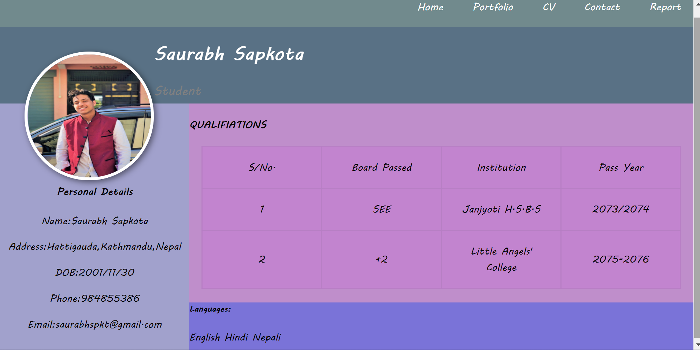
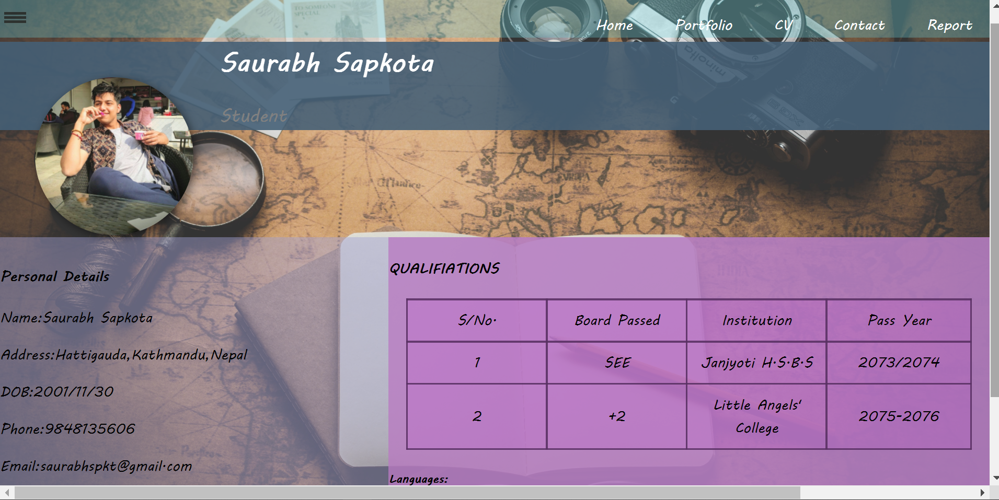
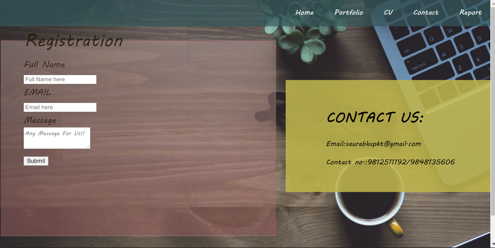
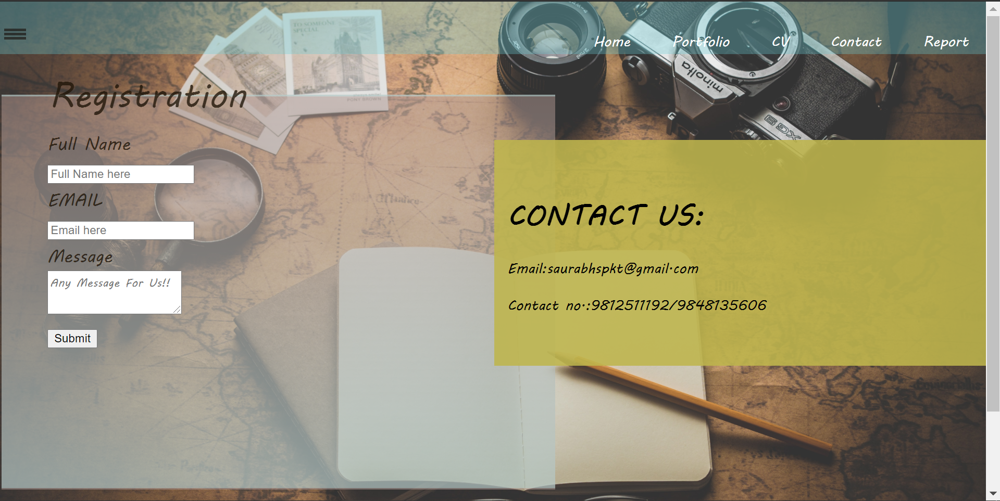
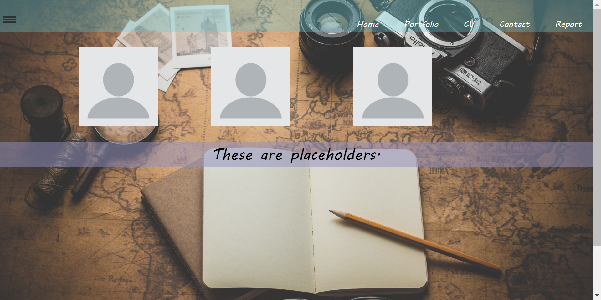
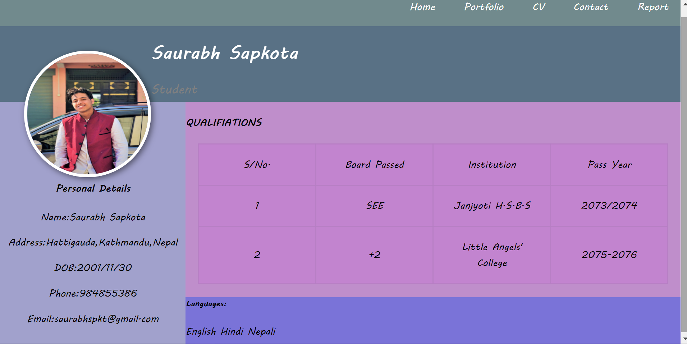
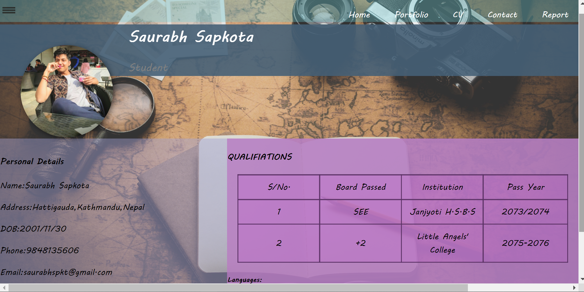
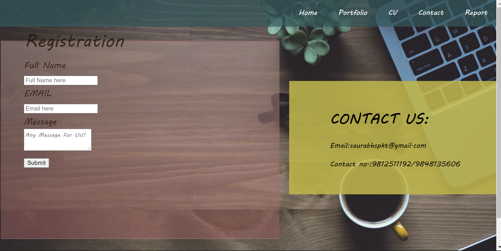
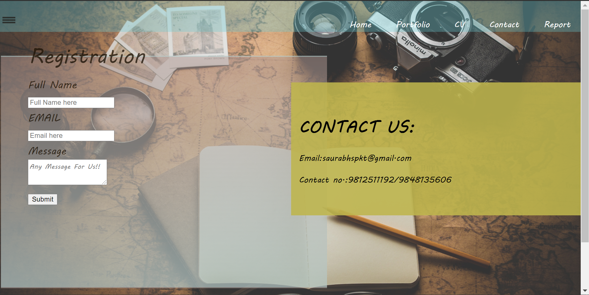
My name is Saurav Sapkota. This is the report for the assignment of CSY1018(Web Development). In this report I am going to talk about changes and experience while doing this assignment. The assignment was to design a personal webpage. The webpage must 5 pages. i.e., Home, Portfolio, CV, Contact and Report page. Use of the media queries should be done in the web design.
On May-11, I received information about the assignment. I started my assignment on May-14 with home page. On May-15 I came up for the navigation bar. I took the idea for the navigation bar from the “Webdev Creation” channel on the YouTube. I have linked the channel name below in the reference section. On May-17 I started my work on other pages of the website. On May-19 I got Covid-19 positive and took rest for some days. However, I continued with my assignment as much as I can. On May-25 I completed my portfolio page and on May-26 I completed my CV page and started on contact page and completed on May-28. However, all this time I was slightly updating looks of other completed pages. Now I have started working on responsive design of all the pages along with the site report page.
Throughout my whole assignment time I had made couple of updates to my Webpages. I tried different design for the text, font size, color, background color, background image and selected the suitable one. I have shown updates of my pages in the images below.
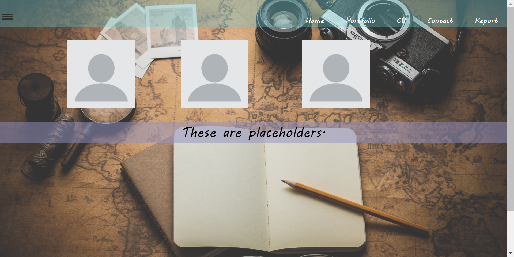
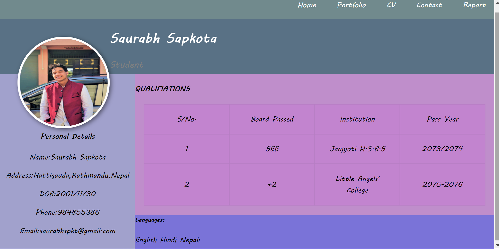
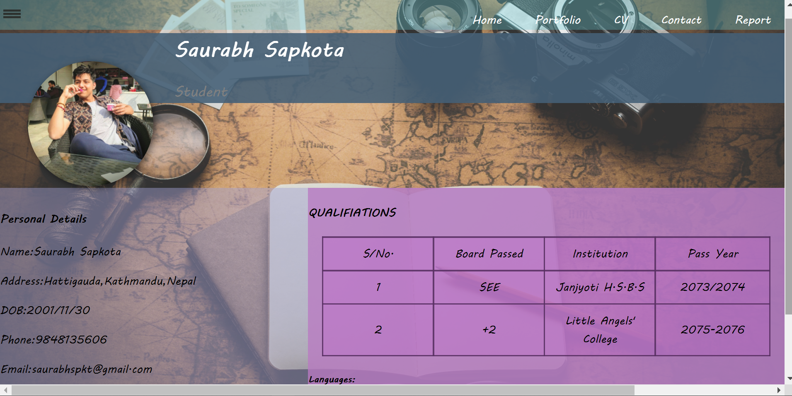
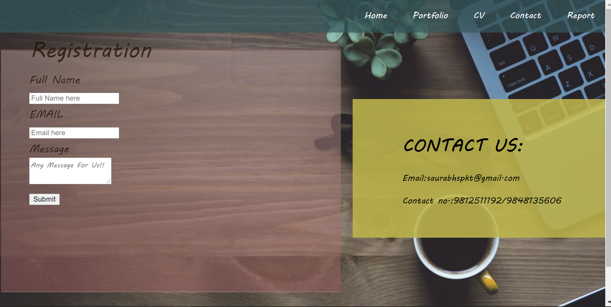
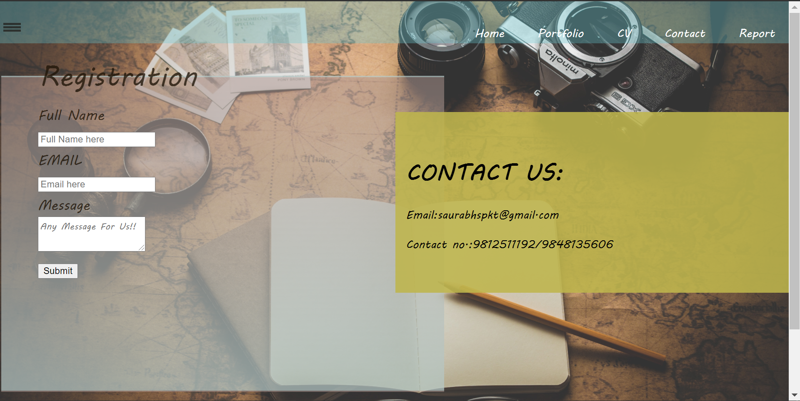
In home page, I just kept it simple with a background image and with normal texting ‘Hi, Welcome to Saurabh`s Page’. The change in home page was just with the background image, placing and color of the text. After that on portfolio, I replaced my background image and adjusted the placeholders in their suitable places. On the CV page I have changed my photo and changed the place of personal details, qualification along with the languages by adjusting their padding, height and margin. On the contact page I haven`t changed anything else except background image and place of Contact Us section. Talking of report page, I’m currently working on that.
Web-Development is most interesting module till now as it got a lot of practical things to do and learning new codes everyday makes learning joyful. We get to learn new codes every day in class. New ideas and discussion in classroom made my assignment easier for me. My experience doing this assignment was pretty amazing and interesting. I got to know a lot of different new codes, different ideas about designing the webpage. I also got to know new things about responsive and use of GitHub. At first, I was confused about the assignment as this type of assignment was totally new thing for me. Later our teacher guided us with the assignment. Along with teacher there were friends to help with the assignment.
In conclusion, I came up with different new ideas about web designing. I came to learn about many new codes which I missed in my class. This assignment was quiet interesting for me and helped boost my knowledge on Web-Development.